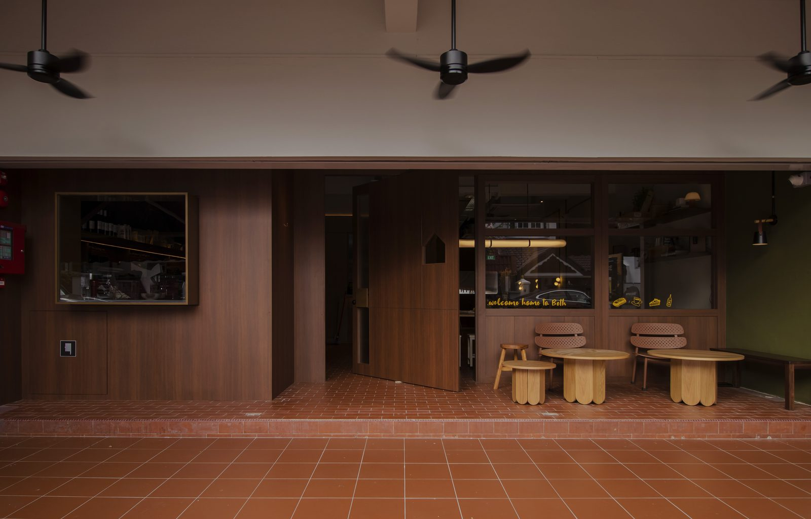
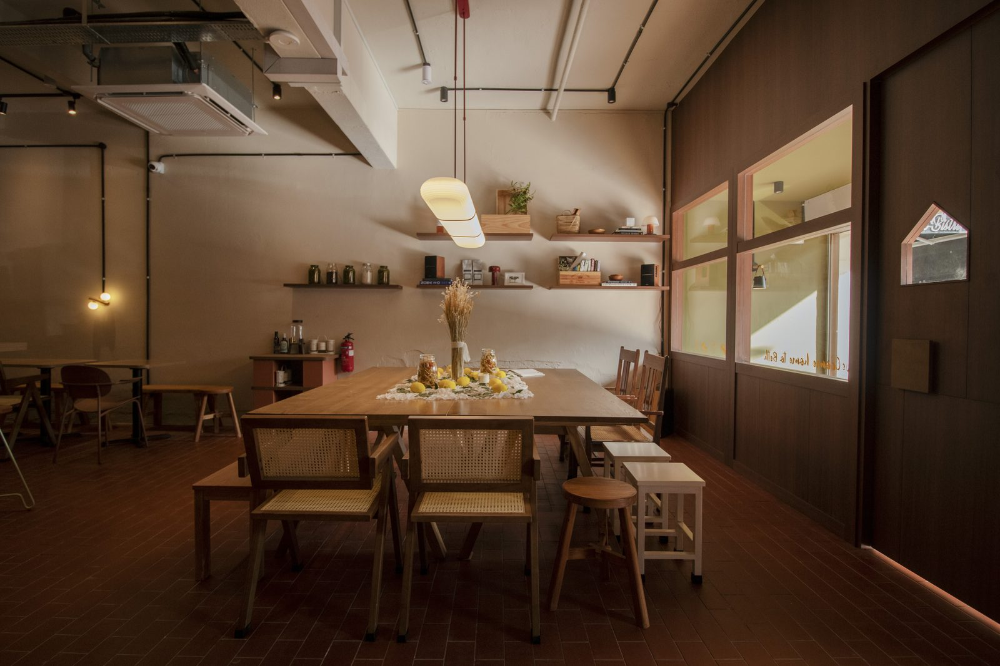
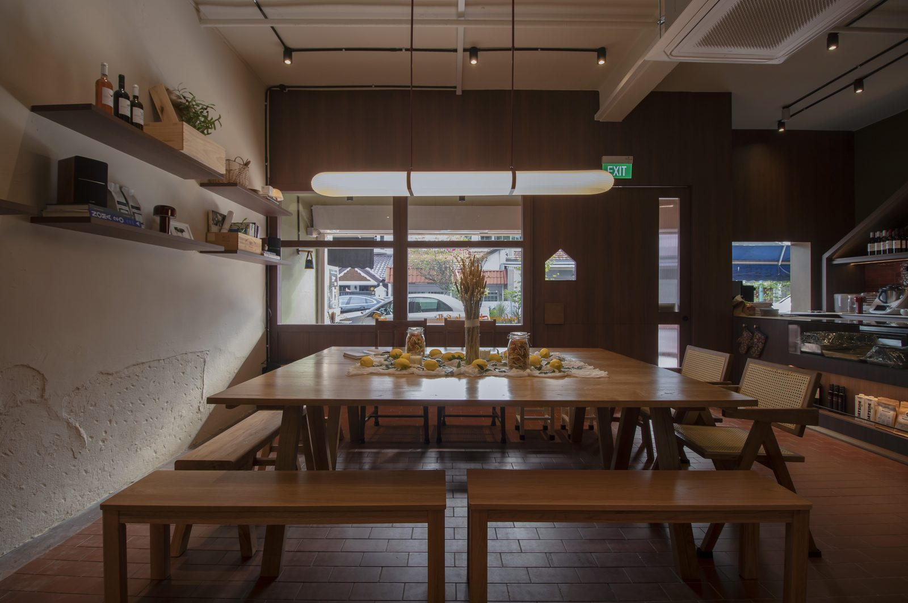
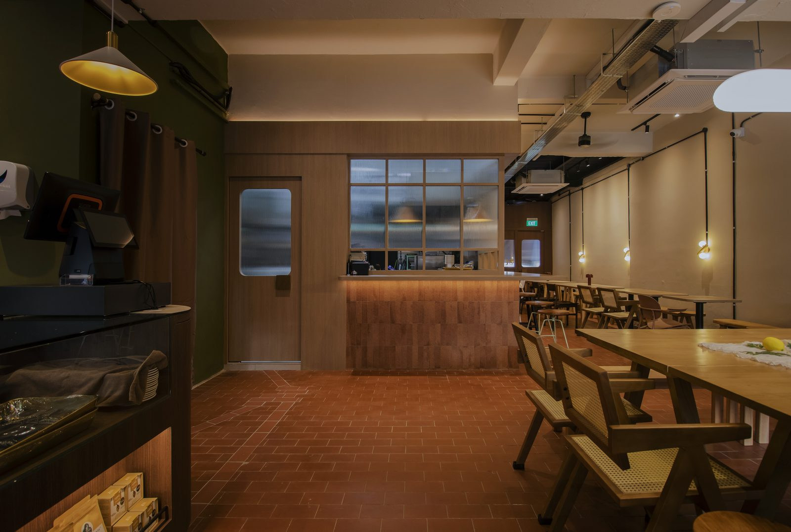
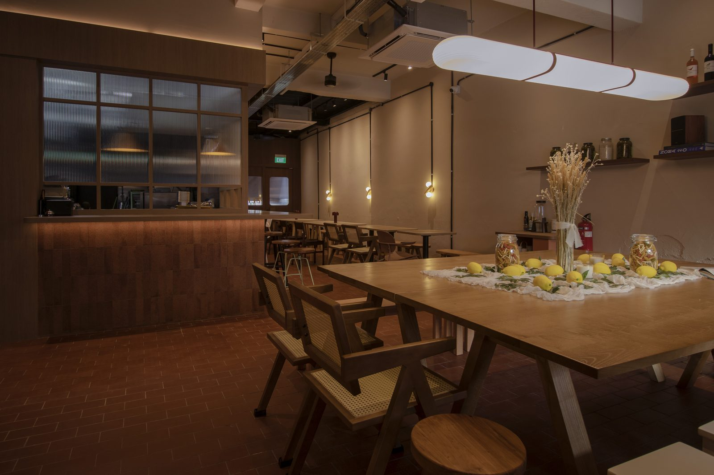
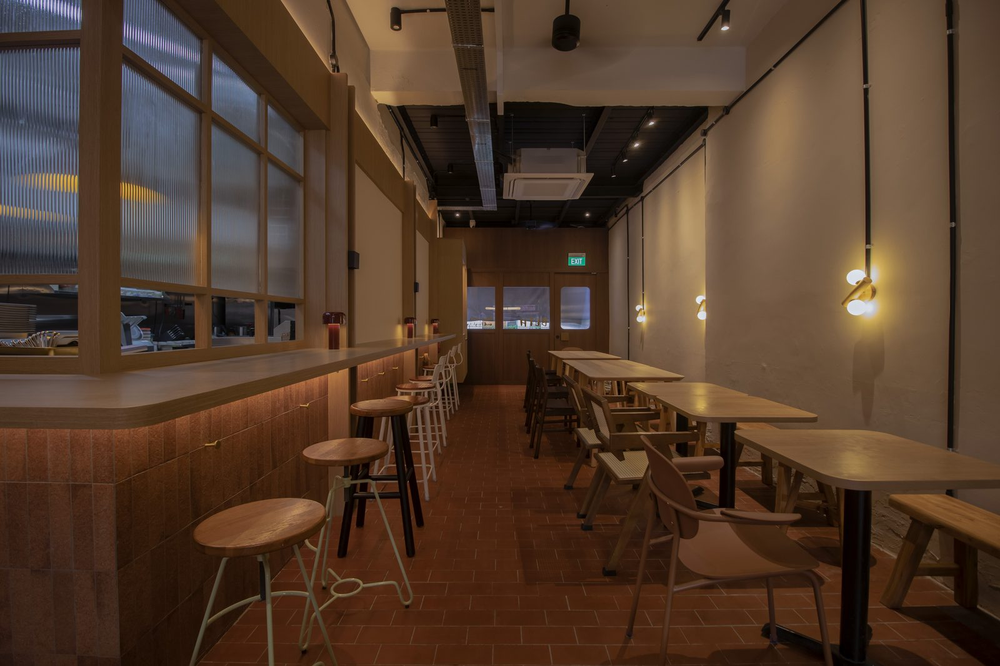
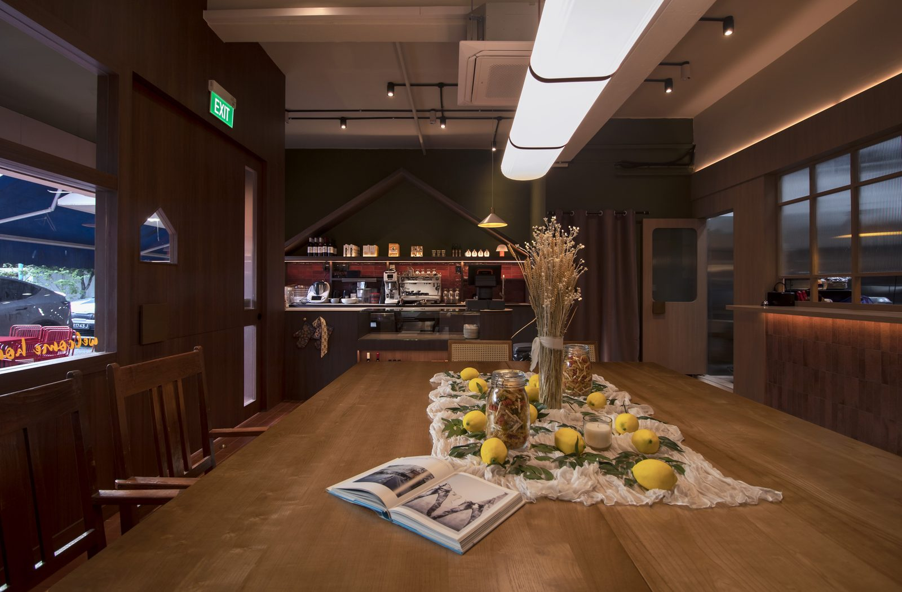
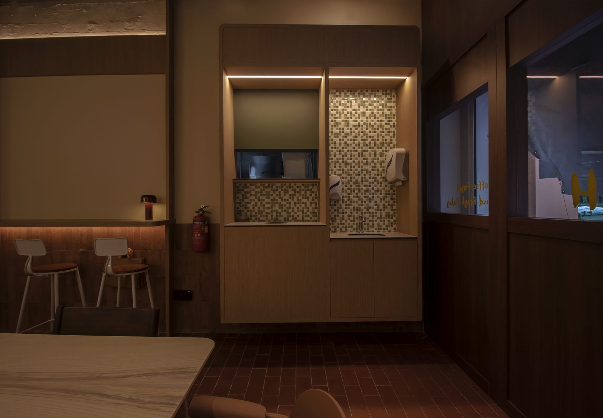
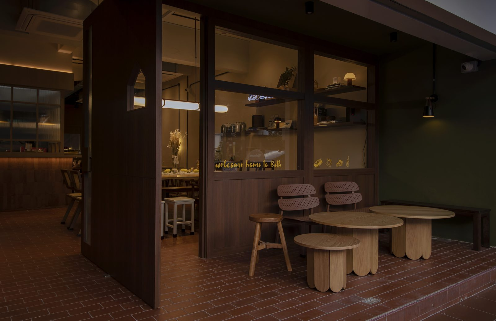

Cafe Beth

Tucked along Upper Thomson, Beth (@welcometobeth) moves effortlessly from sunlit cafe by day to slow-burning wine bar by night. We designed it to feel less like a restaurant, more like a memory – warm, lived-in, quietly confident. Think olive oil wood tones, terracotta floors, hand-finished textures, and lighting that softens as the day winds down. Familiar, but with a wink. Honest, but a little flirtatious. A space to eat, drink, linger – and maybe fall in love a little.








